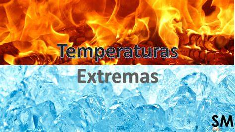

<h1>Agentes físicos: ruídos, vibrações, pressões anormais, temperaturas extremas, radiações, etc.</h1> 
<h1>São os principais farotes, porém desses, as variações de temperatura são as que mais trazem consequências</h1>

